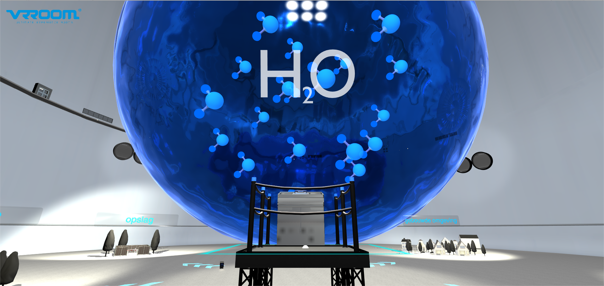

The concept
When I had an internship with VRROOM Ultimate VR Experiences in Groningen, I was part of a project for Gasunie. We made a VR application that shows the player in a simple way how hydrogen is made and how it can be used. King Willem-Alexander of the Netherlands was present at the event where the application was shown, and played it.
Gameflow Manager and Unity Events
The application had to have a linear story and progression to keep the subject understandable, so I created a Gameflow Manager that was in charge of the different chapters of the application. Each chapter could contain a voice clip delivering exposition, so to keep the pacing of the scentences in between clips right, I added customizable timers at the start and end of each chapter.
Each chapter needed to have a lot of options for functionality. To support this, I used the Unity Events. This way truly everything that happened could be called by a central point (the Gameflow Manager), bringing a bit more clarity to the code.
